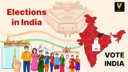

An election is a process in which people vote to choose their leaders and representatives. It is one of the most important parts of a democratic country because citizens are given the power to select the government.
In an election, different political parties and candidates participate and present their ideas, promises, and plans to the public. People listen to them and decide whom they want to support.
Eligible citizens cast their votes in polling booths. After the voting process is completed, the votes are counted and the candidate or party with the highest number of votes becomes the winner.
Elections help maintain democracy, equality, and fairness in society. They give people the freedom to express their opinions and choose leaders who will work for the development of the country.